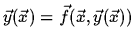
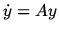
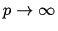
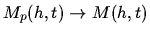

Constructing Some Classes of Specialized
Numerical O.D.E. Integrators by Means of
Computer Algebra Systems
Nikolay O. Kirsanov, Nikolay N. Vassiliev
Institute for Theoretical Astronomy of RAS
St. Petersburg, Russia
Extended Abstract
We consider the methods for numerical integration of O.D.E. as the methods for
approximation of shift map along trajectories of these O.D.E. From
this point of view we can study such approximation maps by numerical and
analytical means.
Highly developed computer algebra systems allow us to construct
the one-step maps for the defined numerical methods and for
the defined systems of O.D.E. purely in analytical mode.
Taking into account all specific features of
the given O.D.E. we can in many cases use additional possibilities.
A simple approach to one-step high-order method construction lies in the
Taylor's development of the solution into a power series. We considered
([3, 4]) alike method [1, 2] for solving the system

:
where y is the solution (we assume that f is analytical),
h is a step, D is
a differential operator along the trajectories of the system.
When p = 1 this
method is simply the Euler's method and one may see easily that
such a method has the order p, i. e. it has the global method
error o(hp). Note that the higher
derivatives of the solution one may determine from the system itself.
The simplicity of constructing the method allowed us to build a Reduce
program with a rather comfortable interface, giving opportunities
to straight-forward input of the equation and initial data within
the frames of an interactive session. The behavior of the integrator
at respect of its parameters were easily
investigated online and compared with the 'hand-made'
Fortran integrators of [2] (ours won).
Usually the complexity of a method (and, in particular, of the method (1))
grows when the method order grows. For our case it is apparent from the
formula (1), because the method is a polynomial with the power p with
respect of h and it takes into account all the derivatives of the
right-hand parts up to the power p.
But when we put into (1) analytical right-hand parts and the numerical
value of h, we can see that there exists a class of O.D.E. systems such
that the one-step map for a method of the p-th order is not more complex
than this
for the first order. For example, all the linear systems of O.D.E.
belong to this
class - it is known that precise solutions of these satisfy the formula:
where M is some matrix, depending on the integration step. If we use the
formula (2) for the linear equation

,
we'll obtain a sequence
of difference formulae like:
where p is the power of the method. When

,
we obtain

.
Using the explicit formula for one step map for a Taylor-like integrator for
solving non-linear Henon-Heiles equations [4] one could have the simple
formula for total degree of the components of this map:
which means that for the Taylor-like integrator of order n
the total degree of
the components of the method's one-step map is equal or less than
n + 1. This
is obviously better than in the case of non-specialized methods.
The specializing methods obviously have not to be linked with Taylor-like
methods, but it seems useful to keep the 'recursiveness' of constructing the
method. This can greatly help us to construct integrators for specialized
classes of O.D.E., e. g. this approach can be used to construct symplectic
integrators for Hamiltonian systems.
Our formulae thus can be used for an estimation of complexity of
evaluation of
the one-step map for a given Hamiltonian and consequently for the
estimation of the effectiveness of the procedure of the numerical
integration.
References
- 1.
- Ortega J. M., Poole W. G., Jr. An Introduction to Numerical Methods for
Differential Equations. - Pitman Publishing Inc., 1981.
- 2.
- Roberts C. E., Jr. Ordinary differential Equations. A Computational Approach. -
Englewood Cliff's, N.Y.: Prentice-Hall Inc., 1979.
- 3.
- Vassiliev N. N., Kirsanov N. O. Producing the High Power One-Step Methods in
Analytical Form to Integrate Asteroid Motions // Asteroid Hassard-95: Abstracts
of the Conference.
(S.Petersburg,, 23-25 May 1995). ITA RAS publishing, edited by A.G.Sokolsky,
1, (1995), pp. 20 - 22.
- 4.
- Vassiliev N. N., Kirsanov N. O. Producing the High Power One-Step Methods in
Analytical Form to Integrate Henon-Heiles Equations // Structure and Evolution
of Stellar Systems: Proc. of the Conference. Petrozavodsk, August 13-17, 1995. -
St. Petersburg, (1997), pp. 4l-44.
IMACS ACA'98 Electronic Proceedings